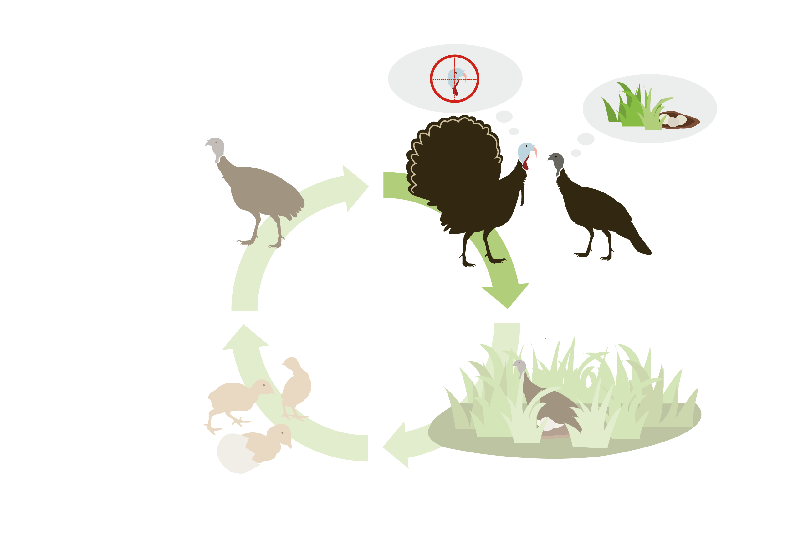
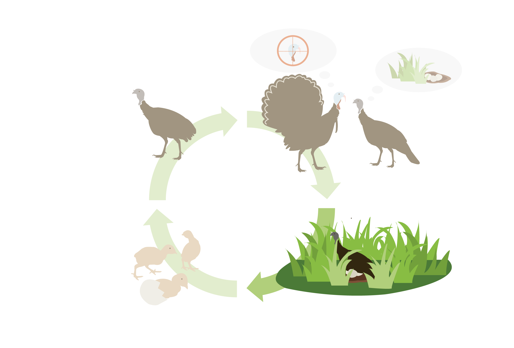
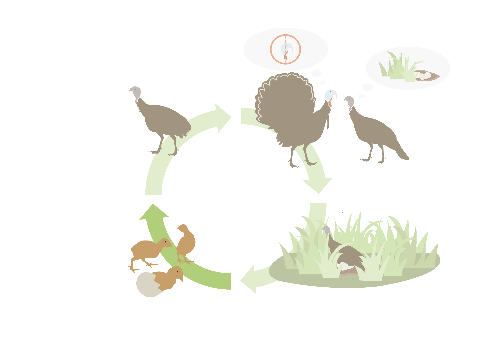
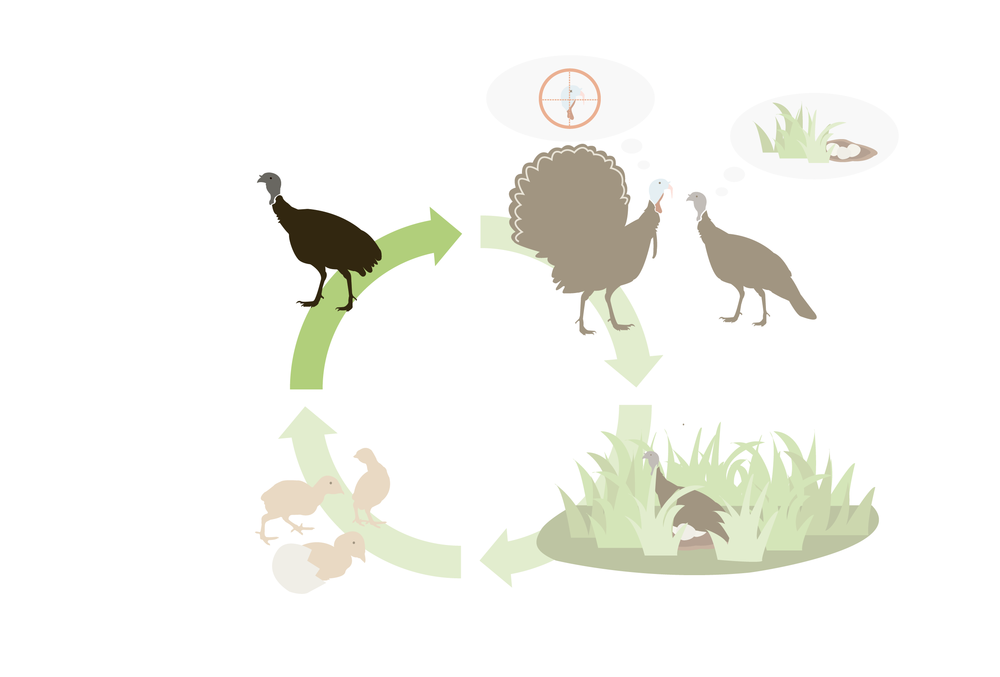

Missouri's wild turkey harvest has dropped 40% from 2004 to 2022
With no formal method to count wild turkeys, Missouri relies on turkey harvest totals to gauge population health. Once nearly soared in the mid-20th century, Missouri’s wild turkey population rebounded through restoration efforts and hunting management. Despite a recent increase in harvest numbers since 2023, the state still saw a 40% drop in turkey harvest from 2004’s peak to 2022.
According to MDC's wild turkey program coordinator Nicholas Okaley, "There’s quite a few things
that impact the poult
survival...Predator is not
the primary driver. It is a
habitat issue."
A turkey habitat change suggested
by white oak recession
Rapid white-oak mortality (RWOM) across southern Missouri signals a shift from open woodland to closed-canopy forest. Historically, natural fire kept canopies below 60 %. Without it, shade-tolerant species crowd in, sunlight and ground cover vanish, and acorn crops plummet, stripping wild turkeys of nesting sites and critical fall food.
Habitat can mean life or death for young turkeys
With only about 30%of turkey poults surviving their first two weeks, quality habitat provides poults with essential shelter from predators and access to insects needed to live.

Male turkeys begin gobbling and fanning their tails to attract hens. Only 30% of the male turkeys contributes to 95% of the next generation. Hunters start hunting male turkeys, while hens start selecting nest sites.

Hens lay one eggs per day, producing 10-12 eggs
in total.The incubation starts
and lasts about 28 days. During this time,
she rarely leaves the nest, only briefly to feed,
drink, or defecate.

Poults (baby turkeys) hatch. They are very
vulnerable during the first two weeks,
because they can’t fly or move quickly.
Only about 30% survive this period.

Young turkeys grow up, and have
the same survival rate as adult turkeys.
An ideal nesting site helps poults' survival
Chicks-hen ratio in Missouri falls short of the sustainability benchmark
According to NWTF, 2.0chicks per hen is considered enough to sustain populations. A 3.0 or more poults per hen indicates a growing population and an ideal situation. Missouri hovers just near the minimum level needed to sustain its wild turkey population.
Landscape shapes survival
Turkey productivity varies widely across Missouri, with hens raising more chicks in open, mixed habitats than in densely forested regions.
Ozark area experiences major Iincrease in trees and shrubs
Restoring Turkey Habitat is a multi-year rotational process
Restoring wild turkey habitat is a long-term, rotational process. Landowners need to evaluate their land with the help of MDC, thin overgrown forests to allow more sunlight to reach the ground, and use prescribed fire to maintain open conditions that support grasses and insects essential for turkey broods. These practices are repeated over time to prevent forests from becoming too dense.
Landowners can also contact a MDC staff for the help of technical advice, step-by
-step recommendation, cost-share information, and burn plans.
Sources: MDC, NWTF, Kentucky Fish and Wildlife, NC Wildlife, Commonwealth of Pennsylvania, TWRA Wildlife Technical Report, Virginia DWR, Holding the line: three decades of prescribed fires halt but do not reverse woody encroachment in grasslands